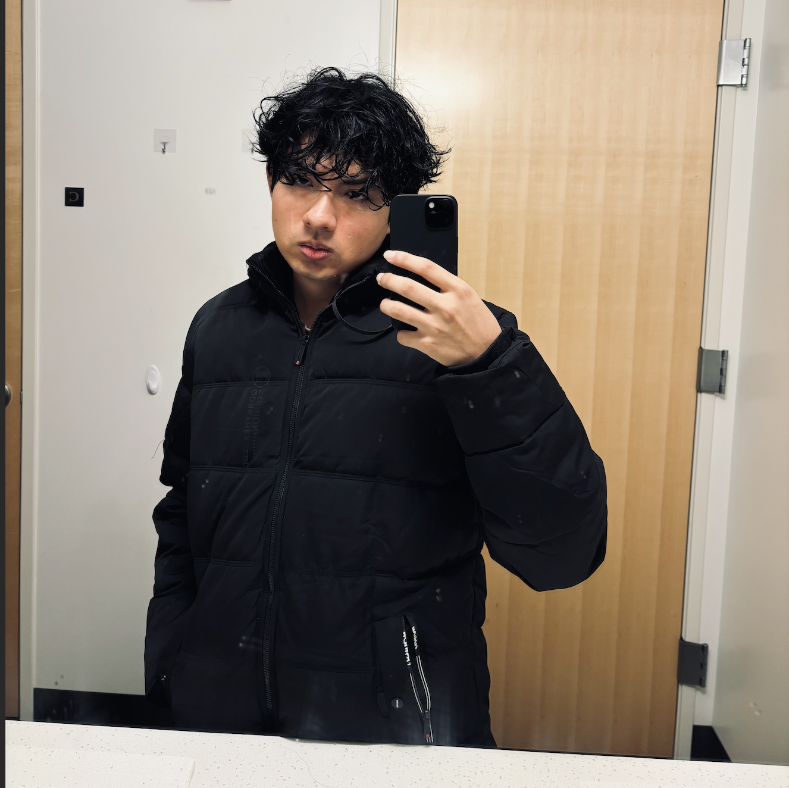
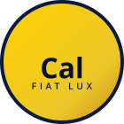
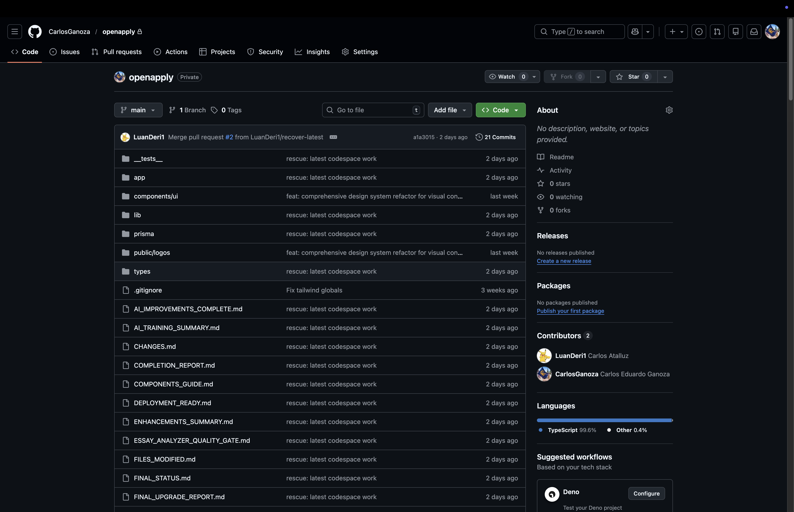
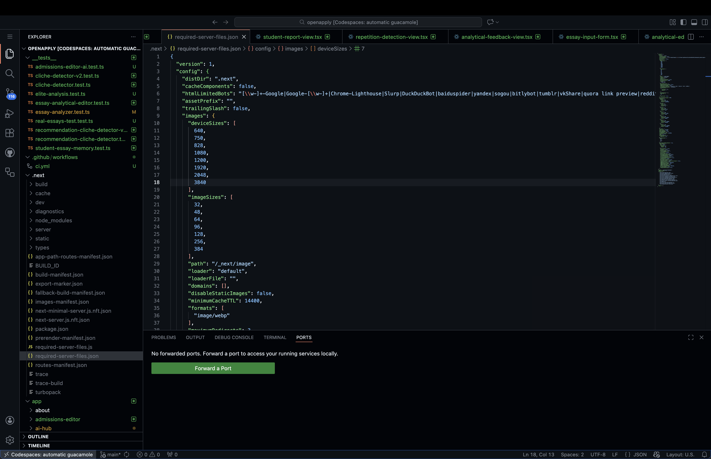
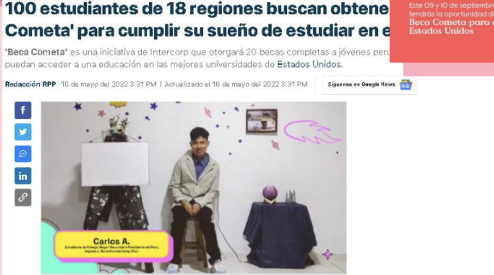
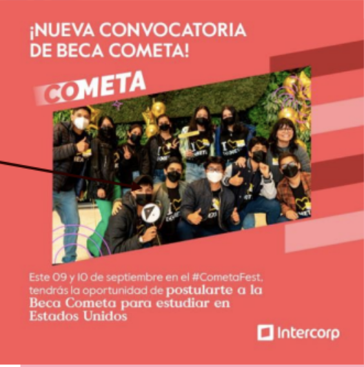
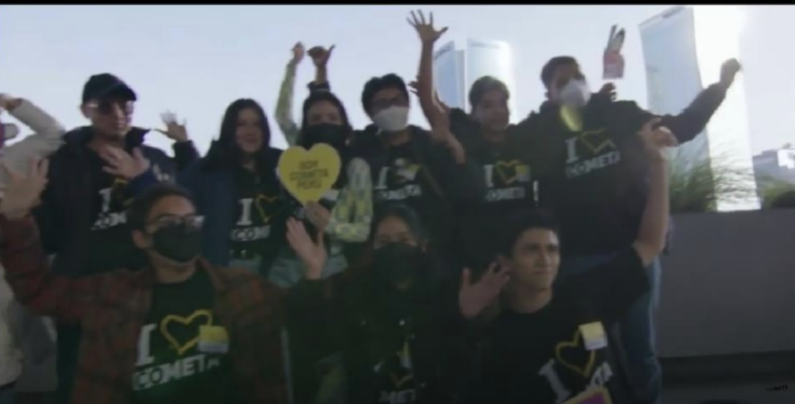
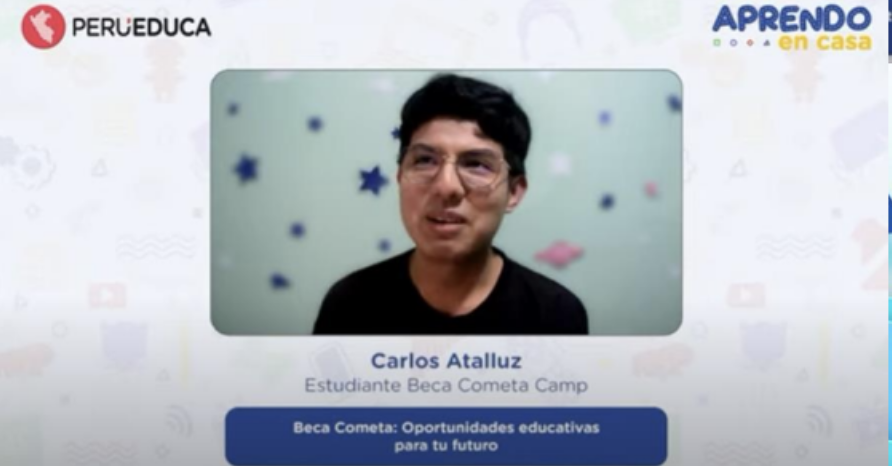

Prototyping research tooling & bilingual dashboards.
Berkeley · research tooling · community impact
UC Berkeley · Computer Science & Data Science
Carlos Atalluz Ganoza
First-generation Lima + Berkeley, shipping systems that translate mentorship, sustainability, and signal work into creative dashboards and tools you can deploy the same day.
Hands-on experiments shared between Lima, Cape Town, and Berkeley.
Guiding 350+ students with code sprints, rotating languages, and context notes.


University of California, Berkeley
Cal · 1873 · Go Bears · Fiat Lux
Main project · priority spotlight
Featured project
Proofreading platform — video + artifacts
My biggest project centers on a tutoring-style proofreading workflow for supplemental essays. The video below walks through the experience,
while the gallery captures the project files and GitHub repo—feel free to swap in actual media and update the filenames in assets/.
Video walkthrough
Overview of the proofreading flow, feedback loops, and mentoring context.


0
Projects shared
0
Voices shared
About Me
Carlos Atalluz — first generation from Lima, Peru
Lima classrooms sparked a systems mindset—cleaner spaces led to curious students, which grew into scholarship labs and bilingual mentorship that hyper-focused on measurement and stories you can act on.
During COVID I coordinated meals, e-commerce, and remote volunteers so neighborhoods stayed fed while learning kept moving. Now Berkeley pairs those lessons with sustainable systems, instrumentation, and storytelling that stay creative and actionable.
Organized cross-campus teams, volunteers, and remote mentors to keep momentum on scholarship, food, and research work.
Build digital/physical experiences—dashboards, outreach platforms, irrigation systems—that stay reliable beyond the launch.
Hands-on learning in Cape Town and Lima ensures every prototype includes ecological and equity-minded thinking.
Leadership & initiatives
Scholarships, scholarship labs, and community engineering
Selective scholarships
Awarded Peru's Most Competitive High School Grant (top 300 of 28K) and full scholarships from Take Action Lab, The Knowledge Society, Global Citizen Year, Harvard Business School, and Somos Cometa after multi-stage interviews, essays, and videos.
Community mentorship
Founded “Making Your Own Path to Success,” teaching 350+ students bilingual scholarship prep, and scaled the “Let's Help Each Other” food program delivering ~150 meals, training volunteers, and landing TV Perú coverage.
Digital resilience
Built four e-commerce sites during COVID, then led “Programming a Beam of Light” to digitize local shops with HTML/CSS/JS plus Adobe Motion so families could safely shop remotely.
Environmental stewardship
Collaborated with Oranjezicht City Farm and Take Action Lab to design irrigation systems, compost loops, and green spaces that now guide community volunteers and growing teams.
Awards & honors
Prizes, leadership fellowships, and standout competitions
Top 300 of 28,000 applicants after four years of knockout rounds and academic prep.
1 of 13 global fellows (29K award) for leadership and community solutions in South Africa.
2% acceptance for the $6K global program after essays, interview, and high-impact investigation.
Top 4% award for leadership and multimedia storytelling with a four-month virtual program.
Selected 1 of 43 from 824 applicants through essays, video, and interview stages.
Accepted from ~52,000 applicants after nine months and six evaluation phases focused on service.
1 of 100 awardees chosen from 15,000+ based on academics, leadership, interviews, essays, and tests.
Top award among 15,000 creators for an impact pitch, featured in national press.
Led a team through qualifiers among 10,000+ squads, staying disciplined with daily training.
Co-led 29+ teammates for nine months of research and policy outreach; honored by Peruvian authorities.
Recognized by HundrED, Goodwall, World Literacy Foundation, Emzingo, YOUNGA, and others.
Led robotics team to win national prize (~$150) ahead of international competitions (FLL).
District-level quarterfinalist twice, competing in 15+ rounds for a $100 prize pool.
Education
UC Berkeley — Data Science (intended)
College of Computing, Data Science, and Society (transitioning from Environmental Design) · Expected May 2028 · GPA: 3.255/4.00
Coursework: Data C8 · CS 61A (IP) · Math 54 · Math 53 (IP)
Application ID
Fall 2024 · Applied Nov 30, 2023
Berkeley, CA · carlos.atalluz@gmail.com
Featured moments
Stories that landed in media and community spotlights
Press photos, community coverage, and spotlight moments that show how scholarship, mentorship, and community action come together.

Community spotlight
TV Perú covered the scholarship mentorship labs and bilingual lessons.

Environmental labs
Small-scale irrigation and green space experiments made headlines.

Scholarship honors
Recognition at national competitions pushed the community story forward.

Mentorship moments
Virtual classroom snapshots from the "Making Your Own Path to Success" initiative.
Certificates & prizes
Official recognition and program certificates
Formal badges and certificates that back each scholarship, mentorship program, and community action mentioned across the site.

Take Action Lab
Full scholarship participation paperwork.

The Knowledge Society
Investigation & leadership scholarship confirmation.

Global Citizen Year
Virtual year-long study recognition.

Harvard Business School
Leadership academy completion.

Somos Cometa
Scholarship & mentorship track certificate.

San Juan de Lurigancho Advisory Council
Community leadership partnership.

Oranjezicht City Farm
Urban farming & irrigation training.

Let’s Help Each Other
Food access and volunteer management certificate.

Making Your Own Path to Success
Scholarship mentoring and tutoring badge.

Programming a Beam of Light
Digital platform development recognition.
Upcoming projects
More experiments are on the way
Working on additional tooling, sustainability experiments, and bilingual mentorship experiences. I’ll add these prototypes once they reach shareable shape.
Contact
Let’s map the next brief
Short note and I’ll reply within 24 hours with work samples and availability.
carlos.ganoza@berkeley.edu
Remote or Bay Area, research tooling, sustainability systems, and mentorship sprints.